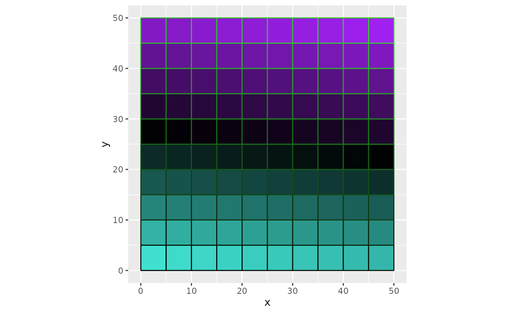

Creates a dataframe of x and y points to visualize a square grid based on given x and y limits.
Providing a color palette and fill style are optional.
Usage
grid_maker(
xlim,
ylim,
size,
fill_pal = NULL,
fill_style = "range",
color_pal = NULL,
color_style = "range"
)Arguments
- xlim
A numeric vector with two X limits. A minimum and maximum limit for the X axis. Must be a length of 2.
- ylim
A numeric vector with two Y limits. A minimum and maximum limit for the Y axis. Must be a length of 2.
- size
A numeric input. The size of the grid. How many shapes will appear in a single row or column. Must be a length of 1, greater than 0, and less than or equal to the max
xlimand maxylim.- fill_pal
Optional. A character vector of 6 digit hexadecimal webcolor code, or
Rcolors()color strings to be applied to fill the grid.- fill_style
Optional. A character input. "range" or "random". Determines how the fill color palette is mapped.
- color_pal
Optional. A character vector of 6 digit hexadecimal webcolor code, or
Rcolors()color strings to be applied to borders of the grid.- color_style
Optional. A character input. "range" or "random". Determines how the border color palette is mapped.
Examples
# Creating data for a grid:
library(ggplot2)
grid_data <- grid_maker(
xlim = c(0, 50),
ylim = c(0, 50),
size = 10,
fill_pal = c("turquoise", "black", "purple"),
color_pal = c("black", "limegreen")
)
ggplot() +
geom_polygon(
data = grid_data,
aes(x, y, group = group),
fill = grid_data$fill,
color = grid_data$color
) +
coord_equal()
